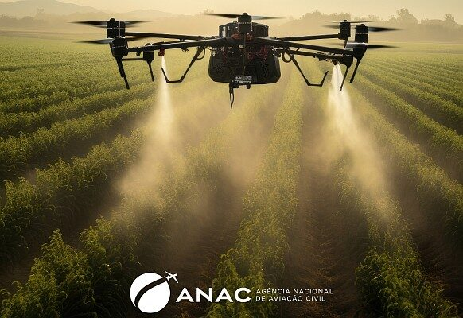
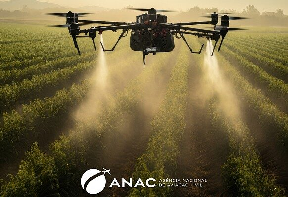

Do campo a cidade colhendo oportunidades
No campo predominam atividades relacionadas ao cultivo da terra, a criação de animais e
ao extrativismo e na cidade predominam as atividades de prestação de serviços, comércio e
transformação dos produtos trazidos do campo.
O trabalho rural é de extrema importância para a economia e a sociedade em geral e os
trabalhadores rurais são responsáveis por produzir grande parte dos alimentos que chegam
às mesas das pessoas em todo o mundo, além de fornecerem matérias-primas para diversas
indústrias.
As cidades são centros de inovação, de cultura e de economia. São também onde a maioria das
pessoas vive e trabalha. Enquanto as cidades oferecem muitas oportunidades, elas também
enfrentam grandes desafios, como a falta de moradia, o transporte, a poluição do ar e da água
e o desperdício de alimentos.
A agricultura de precisão é uma forma de gestão de informações das agrícolas cultivadas. O objetivo
disso é otimizar a produção agrícola, a sustentabilidade da fazenda e a produtividade.
Ou seja, esse é um conceito de manejo das áreas agrícolas atráves da tecnologia moderna.
A tecnologia no campo ocorre quando produtores rurais utilizam softwares, computadores
ou sistemas para fazer o monitoramento da lavoura, automatizar os processos, conectar
máquinas agrícolas, além de reduzir custos e aumentar a produtividade da cultura por meio
de diferentes soluções tecnológicas.
A relação entre cidade e campo é vista por meio da divisão do trabalho em intelectual e manual,
de modo que na cidade é beneficiado o produto vindo do campo.
Os habitantes do campo utilizam muitos serviços encontrados na cidade como serviços bancários,
de saúde e de correios. Já as pessoas que moram na zona urbana procuram o campo para lazer e
para cuidar de lavouras e dos gados.
A partir de 2010 os Drones tiveram grande destaque no Brasil, mais em 2017 a ANAC regulamentou
a ultilização deles.
Os Drones ajudam na contagem de plantas sobrevoando as plantações e registrando imagens que são,
posteriormente, processadas em software, também são utilizados para monitorar o desenvolver da
lavoura com mais precisão.


 
